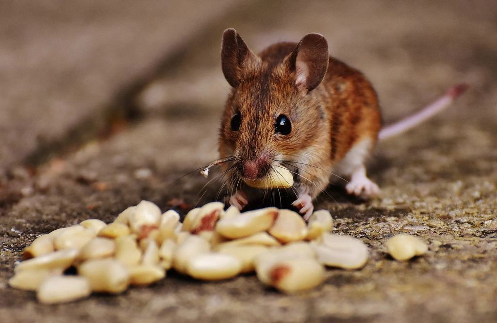
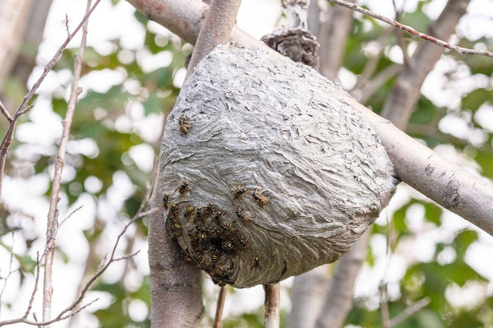
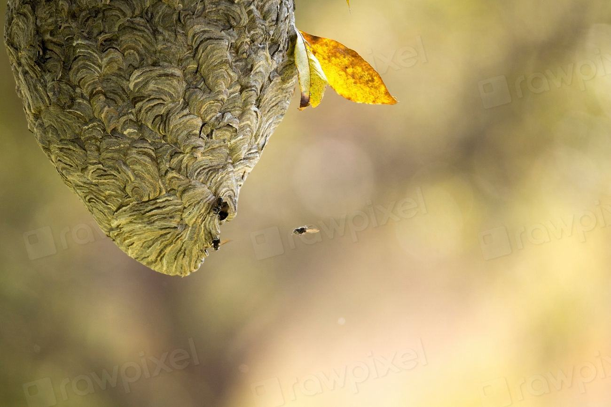
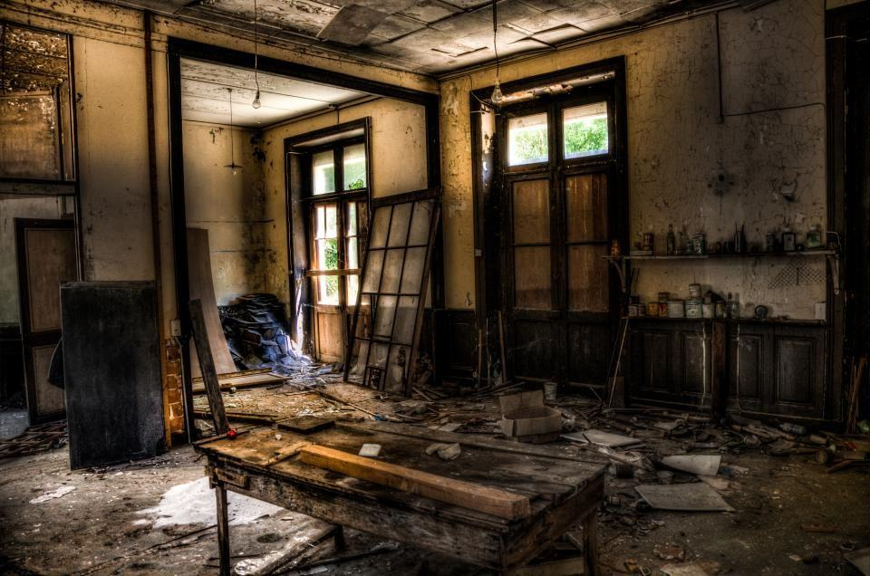
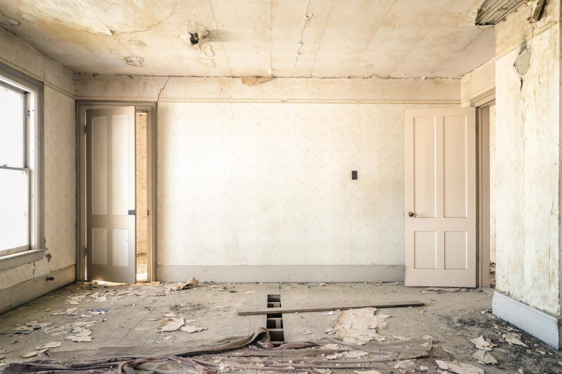
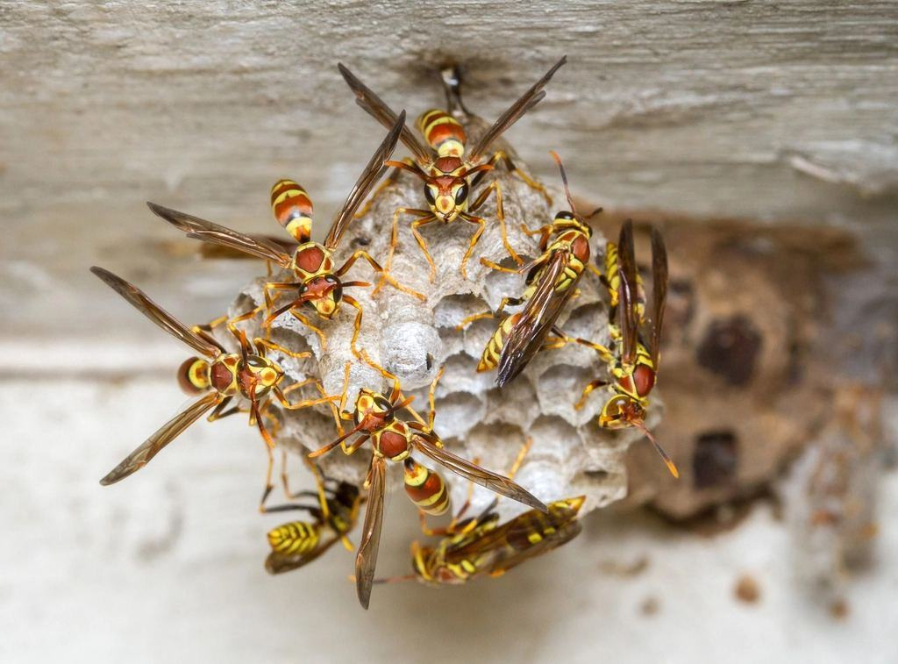
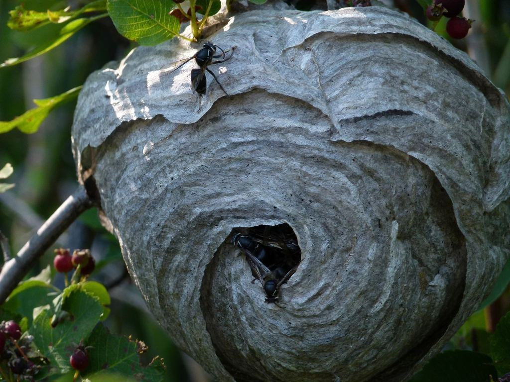

Prövade, försäkrade, tysta

01Certifierade enligt EN 16636
Certifierade sedan 2017 för hela verksamheten, inklusive textil- och samlingsbehandling.

02Biocidbehörighet för alla
Samtliga tekniker har Kemikalieinspektionens behörighet och minst fem års erfarenhet i yrket.
 03
03Säkerhetsprövad personal
Alla anställda har lämnat utdrag ur belastningsregistret och skrivit sekretessavtal.

04Ansvarsförsäkring 20 mkr
Täcker skador på fastighet, inventarier och konst under behandling.
Var ska vi göra ett tyst besök?
Omärkta bilar, tekniker i mörk kavaj och en personlig kontakt som svarar direkt – för hem, hotell och krogar där ingen får märka något.
Våra tjänster- 01
Privata hem
Villor och våningar i Långedrag, Örgryte och på Särö med fast tekniker och omärkt bil.
- 02
Hotell nattetid
Besök nattetid eller i stängda korridorer, och rum tillbaka i bokningen samma dag.
- 03
Fine dining
Krogar med stjärnambitioner får besök efter stängning och protokoll före nästa sittning.
- 04
Butiker och showroom
Klädesmal och pälsängrar i textil, mattor och läder hanteras före öppning.
- 05
Gnagarutredning
Utredning med endoskop och rökprov i avlopp, tätning med rostfritt och kopparnät.
- 06
Vägglöss i hemmet
Hundsök och värmebehandling med intyg till försäkringsbolaget.
- 07
Konst och textil
Skonsam behandling av mattor, tavlor och antika möbler mot mal och trämask.
- 08
Personlig kontakt
Du får din teknikers direktnummer från första samtalet.
Ett urval av anonymiserade uppdrag



UtförtHotell vid Avenyn
Nattlig hundsök av 280 rum per kvartal med rapport till frukostmötet.
 Utfört
UtförtRestaurang i Haga
Möss efter grannens renovering – åtgärdat efter stängning med protokoll till miljöförvaltningen.

UtförtHerrgård på Särö
Frysning av tolv orientmattor och kvävgasbehandling av en möbelsamling från 1800-talet.


Diskret mot grannarna, öppen mot dig
Vi säger exakt vad vi har gjort och varför, med bilder från krypgrunden och kartor över fällorna. Kemiska medel används bara när fällor och tätning inte räcker, och då i låsta stationer som barn och husdjur inte kan öppna.
- 014 hlängsta svarstid på direktnumret
- 02100 %omärkta bilar
- 030underleverantörer
Ett besök som inte syns
 Steg 1 / 4
Steg 1 / 4Direktsamtal
Du pratar med den tekniker som sedan kommer hem till dig – inte med en växel.
NästaBesök när det passar Steg 2 / 4
Steg 2 / 4Besök när det passar
Tidig morgon, sen kväll eller när du är bortrest. Nyckeln förvaras i värdeskåp.
NästaÅtgärd utan spår Steg 3 / 4
Steg 3 / 4Åtgärd utan spår
Fällor i neutrala lådor, tätning som inte syns och inga dekaler.
NästaSkriftlig rapport Steg 4 / 4
Steg 4 / 4Skriftlig rapport
Du får en rapport med bilder och rekommendationer – och samma tekniker till nästa besök.
Ring en tekniker
Aktuellt i korthet

Frysrum för mattor i Mölndal
Vår nya anläggning fryser mattor upp till 4 × 6 meter i minus 30 grader i två veckor.
Läs mer
Elva hotell på avtal
Ytterligare ett hotell vid Avenyn har valt oss för nattservice från november.
Läs mer
Henrik lämnar över
Efter 27 år blir Henrik Wessel styrelseordförande och Therese Kjellgren tar över som vd.
Läs mer

Tjugosju år av tysta besök
- 5årMinsta erfarenhet per tekniker
- 11hotellMed nattservice
- 1kontaktSamma tekniker varje gång
Våra bästa kunder vet inte vad deras grannar har för skadedjursfirma. Det är precis så det ska vara.